Attentional Control Theory
Get these slides:
Dr Germano Gallicchio
Lecturer in Computational Psychophysiology
School of Sport Science, Bangor University, UK
On a computer press F11 to de/activate full-screen view.
For smartphone view and for pdf document: use “learning resources” link above.
Learning outcomes, Session I
From working memory and attention, through what anxiety does to them, to the quiet eye. By the end of this session you should be able to:
- Describe attentional control, in terms of goal-directed and stimulus-driven orienting
- Define cognitive anxiety (worry) and distinguish it from the other forms of anxiety
- Explain the distinction between processing efficiency and performance effectiveness
- Describe empirical evidence that anxiety biases attention towards threat
- Define the quiet eye, as a variable and as a phenomenon
- Recognise when a performance problem can be due to issues with attentional control
ⓘ more info ⇩
Optional material
Note
Content in slides marked Optional adds depth. This content is not examined in the multiple-choice exam. However, it can support a stronger, more critical essay assessment.
Press the down arrow / scroll down where you see the cue.
Attentional Control Theory, in a nutshell
Anxiety consumes working memory and transfers attention from goal-directed to stimulus-driven control ; performers compensate with extra effort, so efficiency drops before performance does.
In lay terms:
1. Worry takes resources. There is less left for the task.
2. Attention is called to whatever is salient rather than by what the task requires.
3. You can maintain performance by trying harder but you would be using more resources = less efficient.
Agenda
Worksheet 1
Space to write during this session: predictions, reasoning, notes.
Open it now and keep it alongside the slides.
Use the copy or download button to save your work.
Working memory (brief recap)
Attentional control theory uses both features. Only these two are needed here.
ⓘ more info ⇩
Optional: Attention, Working memory and executive functions
Fuller treatment of the material here:
Working memory has limited capacity
Think of working memory as the set of resources for temporarily holding and manipulating information.
Analogy used often: a working desk. There is enough space for the things you are working on right now, not much else…

Desk analogy
The white rectangle is the desk, representing how much working memory is being used at this moment. Currently: unlikely/impossible situation where nothing is taking space in working memory
Desk analogy
Most of the times (or always) something occupies space on the desk: the things that are in the working memory. Sometimes one has enough working memory capacity spare to do well whatever it is that one is doing.
Desk analogy
Other times, there’s too much in working memory and the system fails due to overload (running out of cognitive resources). Whatever one is doing is going to suffer in quality.
Working memory’s multiple components

Three components: two store information, one manages access to it.
Anxiety is proposed to disrupt the central executive, not the two storage components.
In Session II the central executive is subdivided into three executive functions. Three of the six hypotheses of Attentional Control Theory concern them.
ⓘ more info ⇩
Optional: Development of the working memory model
Alan Baddeley on the development of his working memory model: https://youtube.com/watch?v=mT0NLihOK30
House windows exercise
Helpful to realize how the three components work together.
Take a couple of minutes to work out how many windows are there in your house
You retreive from long-term memory and manipulate a mental image of your house as you “walk through” it room by room (visuospatial sketchpad)
As you progress, you keep a count of the number of windows by rehearsing the numbers out loud or not. (phonological loop)
You will have followed a strategy: deciding which rooms to visualize next, keeping track of progress, and ensuring the count is updated (central executive).
Orienting of attention: endo- vs exo-genous
Limited capacity means that not all information can be processed. Selection is required, and that is one function of attention. Orienting can be driven from two directions.
Endogenous / goal-directed
- “endo” = from the inside
- voluntary, intentional
- determined by the person
- top-down
- in sport: concentration
Exogenous / stimulus-driven
- “exo” = from the outside
- involuntary, not intentional
- determined by the environment
- bottom-up
- in sport: distraction
Examples:
- Goal-directed: deliberately turning your head to look where your team-mate will pass
- Stimulus-driven: in a tennis tournament, someone in the crowd shouts your name
This distinction underlies the third hypothesis of Attentional Control Theory, stated formally in Session II: anxiety shifts the balance between these two systems.
Attention does other things besides orienting: general alertness, and executive control. Those are covered in the material linked earlier.
“Cocktail party” scenario
Designed to illustrate selective feature of attention at the preconscious level, but here merely a shortcut for me to illustrate goal-directed and stimulus-driven attention at play.

You are in a noisy place. You choose to attend to one speaker (goal-directed). Suddenly, your attention is captured (distracted) by a salient, personally relevant cue (like hearing your name from your back) (stimulus-driven).
Important: the extent of attentional control can be defined as the balance between goal-directed (concentration) and stimulus-driven (distraction) attention
What does anxiety do to attentional control?

Arousal removes the dominance of central stimuli (Shapiro & Johnson, 1987)
Study 1, key methodology
- N = 30 University students
- Task: Classify central and peripheral target stimuli (perceptually difficult because the target stimuli were presented for a short duration.) Using one hand.
- Participants needed to keep their eyes on a central fixation cross. A target stimulus could appear either centrally or in the periphery … or both: dual trial (i.e., two targets at the same time)
- Groups: arousal, non-arousal
- The other hand was for receiving electrical shocks every now and then, but only the lucky ones in the arousal group.
- Analyses: the researchers were interested in the participants’ choices in the dual trials.
Study 1, main results
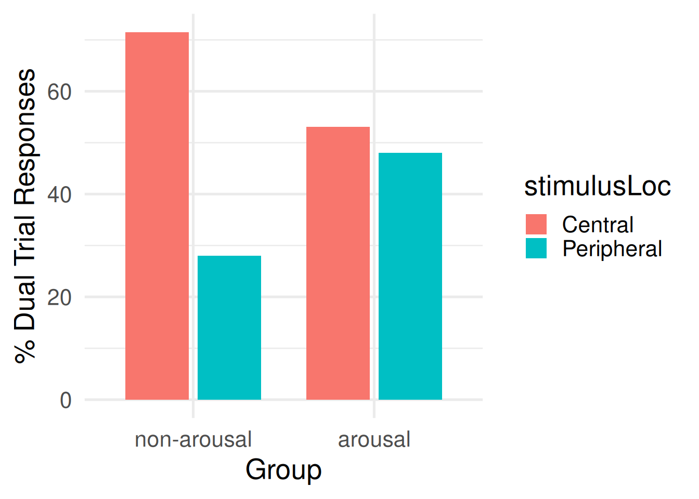
For the non-arousal group, dominance of central stimulus
For the arousal group, no dominance. Arousal countered the dominance of the central stimulus.
What it shows for ACT: under arousal, task-irrelevant peripheral stimuli compete successfully with the central target: stimulus-driven orienting gains ground.
With the centre less predictable, arousal reverses the dominance (Shapiro & Johnson, 1987)
Study 2, key idea
They realized the central stimulus was more predictable (only one location) than the peripheral stimulus. In study 2, they used the same Method, but made the central location less predictable than in study 1.
What do you think they found?
Study 2, main results
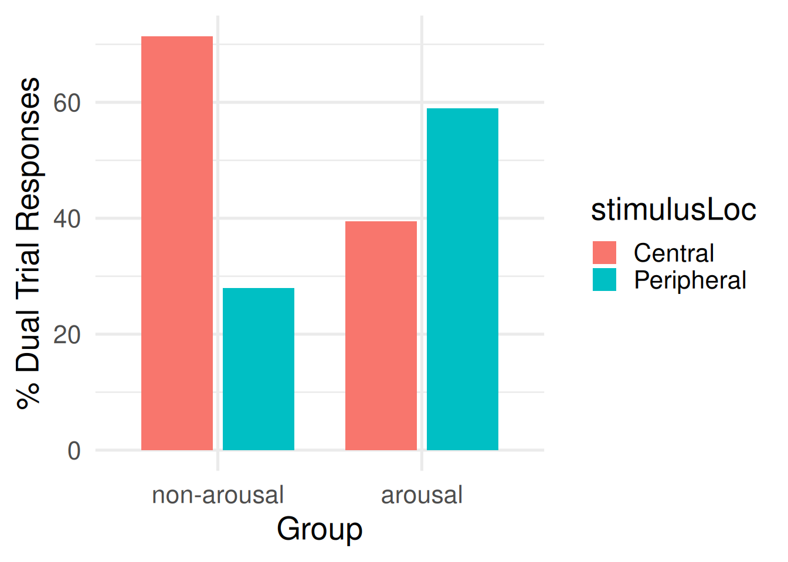
Arousal reversed the dominance, so that when a pair of central-peripheral targets were presented, the peripheral target became the dominant.
What it shows for ACT: the shift is not a fixed bias towards the periphery. Arousal favours whichever stimulus is more salient.
Shapiro, K. L., & Johnson, T. L. (1987). Effects of arousal on attention to central and peripheral visual stimuli. Acta Psychologica, 66(2), 157-172. https://doi.org/10.1016/0001-6918(87)90031-X. Accessible from Talis
Threat cues speed detection, more so in phobics (Lipp & Derakshan, 2005)
Key methodology:
- N = 70 participants
- Groups:
- Spider/snake phobics
- non-phobics
- Task: emotional dot probe
- Emotional Dot probe: a cue appears on the screen either left or right before a target stimulus appears either left or right. The cue could be neutral or emotional (image of a snake).
Main results:
- The target was detected faster when appearing shortly after an emotional cue
- Larger effects for phobics
What it shows for ACT: threat-related cues capture attention, and what constitutes a threat is specific to the individual.
Lipp, O. V., & Derakshan, N. (2005). Attentional bias to pictures of fear-relevant animals in a dot probe task. Emotion, 5(3), 365. https://doi.org/10.1037/1528-3542.5.3.365. Accessible from Talis
Summary of effects of anxiety on attention: Attentional Bias
Anxiety induces an attentional bias, consisting of enhanced processing of threats:
- early detection of threats
- impaired disengagement from threats
(whatever threat means to the individual).
Good or bad? Neither. From an evolutionary perspective, anxiety is an adaptive process that increase chances of survival. But thinking about threats might not always be the most functional way to use one’s working memory resources.
Worry and an easy task
Resources dedicated to worry (blue) are not dedicated to process task-related information. But there are plenty resources for both. Performance is good.
Greater worry, sufficient resources
If worry takes more resources (i.e., one experiences greater cognitive anxiety), while still leaving enough for the easy task, there is still space for both. Performance is still not impaired.
A more demanding task, insufficient resources
But if the task is more difficult requiring more resources, and if there are none left, performance will be impaired.
Performance is impared if there are not enough resources to carry out the task. Worry is a distraction that takes resources away from the task
Effort maintains performance at the cost of efficiency
Capacity can be temporarily increased through effort mobilisation. Resources are then sufficient for both, and performance is maintained.
Extra resources were required for the same output: decreased efficiency.
The same task performed more efficiently
In fact, even a task so difficult could have been carried out well in a more efficient manner (i.e., without the extra effort) if worry did not occupy so much of working memory.
Efficiency as a ratio
The effects of worry (cognitive anxiety) are best studied not on performance, but on processing efficiency.
Note
\[ \text{efficiency} \propto \frac{\text{performance}}{\text{resources}} \]
The formula is a short version of “how much you do in relation with how much effort you put tells about efficiency”. The symbol \(\propto\) means “is proportional to”.
PET vs ACT
Processing Efficiency Theory (Eysenck & Calvo, 1992), the predecessor of Attentional Control Theory.
PET specifies the cost but not the mechanism, which is what Attentional Control Theory adds.
Eysenck, M. W., & Calvo, M. G. (1992). Anxiety and performance: The processing efficiency theory. Cognition & Emotion, 6(6), 409-434. https://doi.org/10.1080/02699939208409696. Accessible from Talis.
Effort increases with set criticality; performance falls for high-trait-anxiety players (Smith et al., 2001)
Key methodology:
- N = 12 volleyball players
- 6 low and 6 high in trait anxiety
- Task: Eigth volleyball games
- Measures:
- State anxiety (through questionnaire)
- Effort mobilized (through questionnaire)
- Performance (through video analyses)
- Analysis factors
- Group (low, high trait anxiety)
- set criticality
- low: 7 or more points of difference
- moderate: between 3 and 6 points of difference
- high: less than 2 points of difference
Predictions:
- State anxiety would be greater for more critical sets
- Effort would also be greater for more critical sets
- Performance would increase when more effort is mobilized
- but only for the low-trait anxiety group
Main results:
- High-trait anxiety groups experienced greater state anxiety
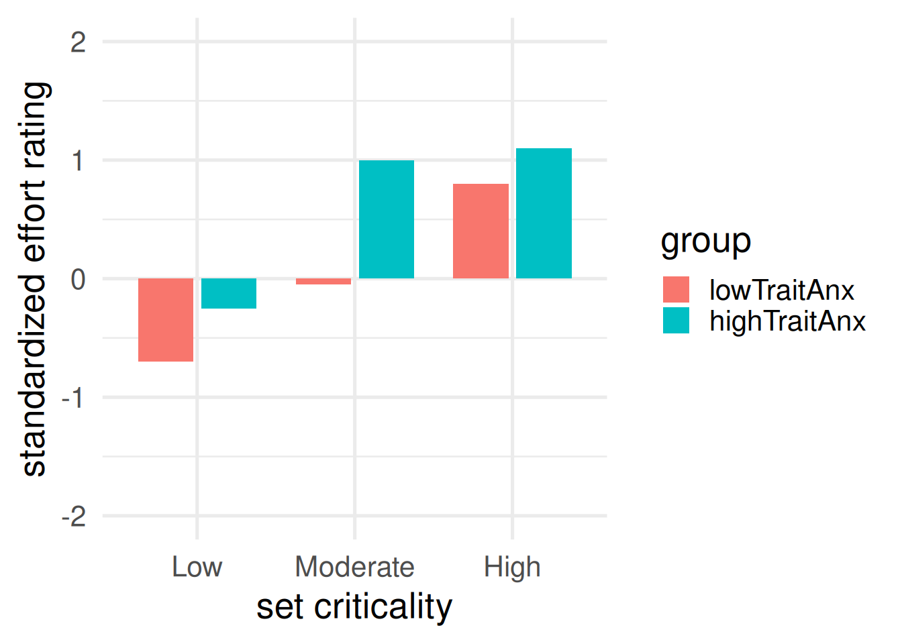
- Effort increased with set criticality
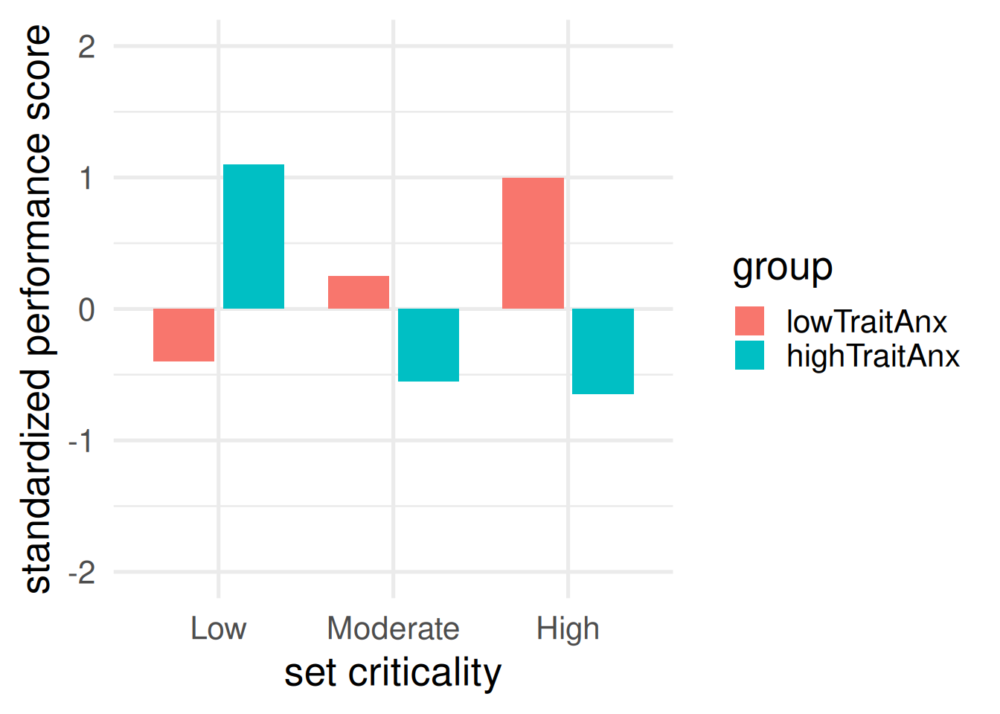
- Performance improved with set criticality for the low-trait anxiety group
- Performance declined with set criticality for the high-trait anxiety group
Interpretation: Performance and worry competed for resources. As worry (state anxiety) increased over set criticality, fewer and fewer resources were left to focus on the volleyball task. Some support for Processing Efficiency Theory
What it shows for ACT: effectiveness and efficiency dissociate. Effort increased in both groups; only the low-trait-anxiety group converted it into performance.
Smith, N. C., Bellamy, M., Collins, D. J., & Newell, D. (2001). A test of processing efficiency theory in a team sport context. Journal of Sports Sciences, 19(5), 321-332. https://doi.org/10.1080/02640410152006090. Accessible from Talis
Visuospatial attention in target sports: the quiet eye

Joan Vickers
As a variable
- a duration, in (milli)seconds
- eyes on the critical location or object (e.g., the ball in golf putting)
- begins before movement initiation (“QE onset”)
- ends when gaze deviates from that location (“QE offset”)
As a phenomenon, extensively reported:
- experts show a longer QE than novices
- QE is longer for successful than unsuccessful performance
- it is trainable
Relevance here. On an attentional-control account the Quiet Eye is an index of which system is driving orienting: a long, steady fixation on the task-relevant target indicates goal-directed dominance, a short or erratic one indicates stimulus-driven dominance.
On this account the quiet eye provides measurable evidence for Attentional Control Theory, and quiet eye training becomes an attentional-control intervention.
The mechanisms underlying the Quiet Eye remains debated.
Optional reading:
Vickers, J. N. (1992). Gaze Control in Putting. Perception, 21(1), 117-132. https://doi.org/10.1068/p210117 Accessible from Talis
Hossner (Ed.), E.-J. (2016). Quiet Eye research - Joan Vickers on target. Current Issues in Sport Science (CISS), 1, 100. https://doi.org/10.15203/CISS_2016.100
Gallicchio, G., Cooke, A., & Ring, C. (2018). Assessing ocular activity during performance of motor skills using electrooculography. Psychophysiology, 55(7), https://doi.org/10.1111/psyp.13070
Gallicchio, G., & Ring, C. (2020). The quiet eye effect: A test of the visual and postural-kinematic hypotheses. Sport, Exercise, and Performance Psychology, 9(1), 143-159. http://dx.doi.org/10.1037/spy0000162
Quiet Eye on Scientific American Frontiers: https://youtube.com/watch?v=knfC978EoWc
Quiet eye durations are longer before holed putts (Wilson & Pearcy, 2009)
Key methodology:
- N = 6 participants
- Task: Golf putting on flat and sloped surfaces
- Measure:
- Performance
- Quiet Eye duration via eye tracking
Key result:
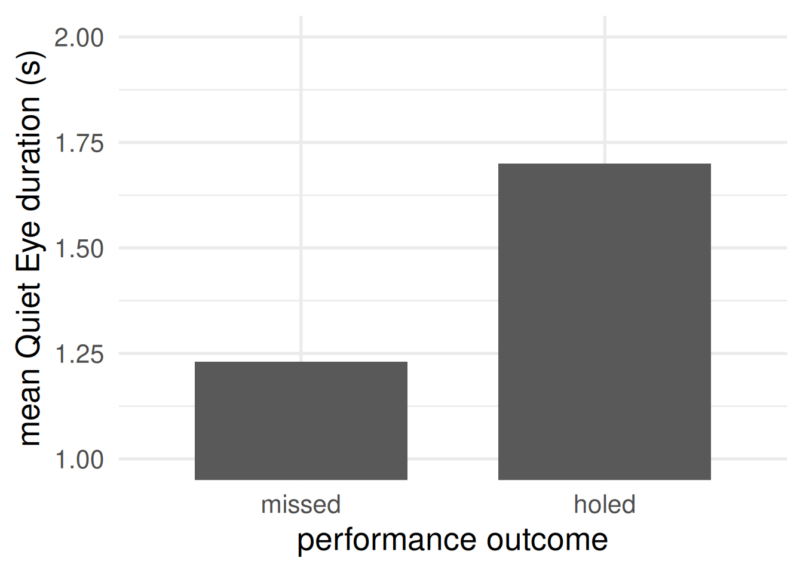
Significantly longer QE durations ahead of holed than missed putts.
What it shows for ACT: within the same performer, successful trials show longer goal-directed fixation. Quiet eye duration varies with control, not with skill level alone.
Wilson, M. R., & Pearcy, R. C. (2009). Visuomotor Control of Straight and Breaking Golf Putts. Perceptual and Motor Skills, 109(2), 555-562. https://doi.org/10.2466/pms.109.2.555-562 Accessible from Talis
Experienced golfers show longer quiet eye durations than novices (Walters-Symons, Wilson, & Vine, 2017)
Key methodology
- N = 18 experienced golfers
- N = 21 novice golfers
- Task: flat-surface golf putting
Key result
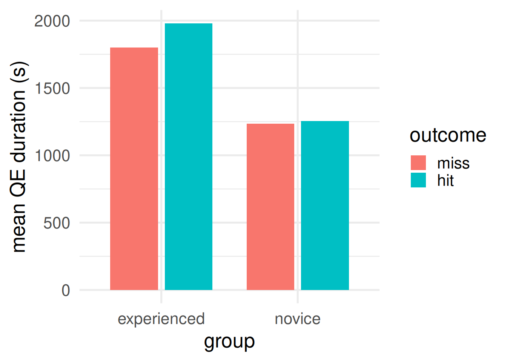
- Experienced golfers showed longer QE durations than novices
What it shows for ACT: the expert-novice difference supports quiet eye duration as a marker of attentional control.
Walters-Symons, R. M., Wilson, M. R., & Vine, S. J. (2017). The quiet eye supports error recovery in golf putting. Psychology of Sport and Exercise, 31, 21-27. https://doi.org/10.1016/j.psychsport.2017.03.012 Accessible from Talis
Effort increases under competition; performance still declines (Wilson et al., 2006)
Key methodology:
- N = 24 university students
- Median split into low and high trait anxiety
- Task: simulated rally driving, under two conditions
- practice (designed to induce lower state anxiety)
- competition (designed to induce higher state anxiety)
- Measures:
- Trait and state anxiety (through questionnaires)
- Performance (time to complete the race)
- Effort mobilized
- through questionnaire
- through pupillometry (increased pupil diameter = more effort)
Main results:
for both groups, state anxiety increased from practice to competition.
the high-trait anxiety group showed greater state anxiety.
Pupil diameter increased from practice to competition for both groups, being also larger for high-trait anxiety group
Self-report effort showed similar results, with the practice-to-competition increase much larger in the high-trait anxiety group.
No group difference in performance during practice
Performance decreased from practice to competition
Performance drop was larger for the high-trait anxiety group
Interpretation:
There were enough spare resources in working memory to complete the driving task when worry (state anxiety) used a small amount of resources.
Worry (state anxiety) occupied more resources in competition, especially for the high-trait anxiety group.
The high-trait anxiety group mobilized more resources, increasing their working memory, but the extra resources were not enough to maintain as good performance.
These findings support Processing Efficiency Theory
What it shows for ACT: pupil diameter and self-reported effort both increased, yet performance declined further in the high-trait-anxiety group: the additional resources mobilised were insufficient.
Wilson, M., Smith, N. C., Chattington, M., Ford, M., & Marple-Horvat, D. E. (2006). The role of effort in moderating the anxiety–performance relationship: Testing the prediction of processing efficiency theory in simulated rally driving. Journal of sports sciences, 24(11), 1223-1233.https://doi.org/10.1080/02640410500497667. Accessible from Talis
Symptoms of a diagnosis of impaired attentional control
Anxiety consumes working memory and transfers attention from goal-directed to stimulus-driven control; performers compensate with extra effort, so efficiency drops before performance does.
The presence of several symptoms makes an attentional-control diagnosis plausible.
| Symptom | Observable example |
|---|---|
| Attention captured by task-irrelevant cues under pressure | Report of noticing cameras or spectators; gaze leaving the target late in the routine |
| Worry reported before or during execution | Report of thinking about the consequences of failure |
| Effort increased, performance unchanged or reduced | Report of greater training effort without corresponding improvement; visible straining |
| Difficulty disengaging after an error | One error followed by a cluster of errors |
| Erratic gaze, or shortened final fixation, in aiming tasks | Measured by eye tracking, or inferred from a rushed pre-performance routine |
The same symptoms can be compatible with a different diagnosis or other accounts of performance under pressure.
Learning outcomes, Session II
Six hypotheses, then two interventions and the evidence for them.
By the end of this session you should be able to:
- Name the three executive functions and relate them to the central executive
- State attentional control theory’s six hypotheses
- Describe research testing the theory, and say what each study shows
- Define gaze training and cognitive training, and the mechanism targeted by each of them
- Discuss the evidence for each intervention, including its weaknesses
- Apply the theory to an athlete and justify an intervention
Recap of session I
Three questions on last session’s material.
Worksheet 2
Space to write during this session: predictions, reasoning, notes.
Open it now and keep it alongside the slides.
Use the copy or download button to save your work.
Brief recap of Processing Efficiency Theory
People who experience greater cognitive anxiety (worry) might perform worse than those who experience less. But this is not always the case… why?
- There is not enough space in the working memory to process everything
- Our attention selects information to be processed
- Working memory and attention are not unitary concepts
- Cognitive anxiety (worry) does not necessarily reduce performance
- Effort can counteract the impairment at the expense of processing efficiency
- Cognitive anxiety (worry) reduces processing efficiency
Executive functions
Inhibition = resisting the processing of task-irrelevant information (resisting distractions)
Shifting = moving focus towards task-relevant information (concentrating)
Updating = monitoring and processing information held in working memory
Hypotheses 4, 5 and 6 each state that anxiety impairs one of these functions.
This greater specificity about the central executive is what developed Processing Efficiency Theory into Attentional Control Theory.
Miyake, A., Friedman, N. P., Emerson, M. J., Witzki, A. H., Howerter, A., & Wager, T. D. (2000). The unity and diversity of executive functions and their contributions to complex “frontal lobe” tasks. Cognitive Psychology, 41(1), 49-100. https://doi.org/10.1006/cogp.2000.0734
Attentional Control Theory: six hypotheses
Building on the claims stated in Session I, here are the six hypotheses that define Attentional Control Theory.
Hypotheses 1 and 2 concern the cost of anxiety. Hypotheses 3 and 4-6 concern the mechanism.
Eysenck, M. W., Derakshan, N., Santos, R., & Calvo, M. G. (2007). Anxiety and cognitive performance: attentional control theory. Emotion, 7(2), 336. https://doi.org/10.1037/1528-3542.7.2.336 Accessible from Talis
ⓘ more info ⇩
Optional
Michael Eysenck on the bi-directional effects of anxiety and cognition: https://youtube.com/watch?v=7j47tjYzeKY
ACT hypothesis 1: processing efficiency
Cognitive anxiety impairs processing efficiency more than it impairs performance.
Worry (in blue) occupies resources in Working Memory. But there are enough resources to complete the task (in yellow).
ACT hypothesis 1: processing efficiency
Cognitive anxiety impairs processing efficiency more than it impairs performance.
Worry (in blue) takes resources away from the task (in yellow). Performance is impaired.
ACT hypothesis 1: processing efficiency
Cognitive anxiety impairs processing efficiency more than it impairs performance.
Overall resources (in white) are temporarily increased through greater effort. Performance of the task (yellow) is not impaired despite the large worry (blue). Efficiency decreases.
ACT hypothesis 2: task demands
The more difficult the task, the higher the chances of decreased efficiency
If the task is easy (i.e., it requires not many Working Memory resources), the effects of worry on efficiency are not visible (no need to put extra effort).
ACT hypothesis 2: task demands
The more difficult the task, the higher the chances of decreased efficiency
It is when the task is hard (i.e., it requires many Working Memory resources), that the effects of worry on efficiency are more likely to be visible (there is need to put extra effort).
ACT hypothesis 3: attentional control
Cognitive anxiety disrupts attentional control
A scale analogy:
⚖️
goal-directed (i.e., concentration) and stimulus-driven (i.e., distraction) types of orienting compete for which one is the main driver of attention/selection (i.e., what to focus on)
Attentional control = ability to maintain a goal-directed (endogenous) attentional orienting (concentration), while suppressing stimulus-driven (exogenous) attentional orienting (distraction)
The issue when performing under pressure:
GOAL-DIRECTED STIMULUS-DRIVEN
You lose focus on the task and become distracted by non-task related information.
The objective of performing under pressure intervention:
GOAL-DIRECTED
STIMULUS-DRIVEN
You shield from distractions and maintain focus on task-related information.
ACT hypothesis 4: inhibition
How is attentional control disrupted (hypothesis 3) under elevated cognitive anxiety? Through impaired inhibition
- Impaired inhibition enhances the stimulus-driven path to attentional orienting
- One becomes unable to block out irrelevant information
- Potential distractions (non-task related activity) intrude in one’s attention
ACT hypothesis 5: shifting
How is attentional control disrupted (hypothesis 3) under elevated cognitive anxiety? Through impaired shifting
- Impaired shifting decreases the goal-directed path to attentional orienting
- One becomes unable to focus on the relevant information
- Potential important information (task related activity) are not in one’s focus
ACT hypothesis 6: updating
How is attentional control disrupted (hypothesis 3) under elevated cognitive anxiety? Through impaired updating
- When the Working Memory is overloaded, it loses the ability to update and monitor information
- One fails to keep track of changing task demands
- Processing becomes less flexible and adaptive
Pressure shortens quiet eye duration (Wilson et al., 2009)
Key idea:
- Quiet Eye duration as measure of attentional control
- Does anxiety impair QE durations?
Key methodology:
- N = 10 university students (basketball players)
- Task: free throws until 10 hits and 10 misses
- Conditions:
- Control (low pressure)
- Experimental (high pressure, competition and financial incentive)
- Measures:
- State anxiety, through questionnaire
- Quiet Eye duration, through eye tracking
Key results:
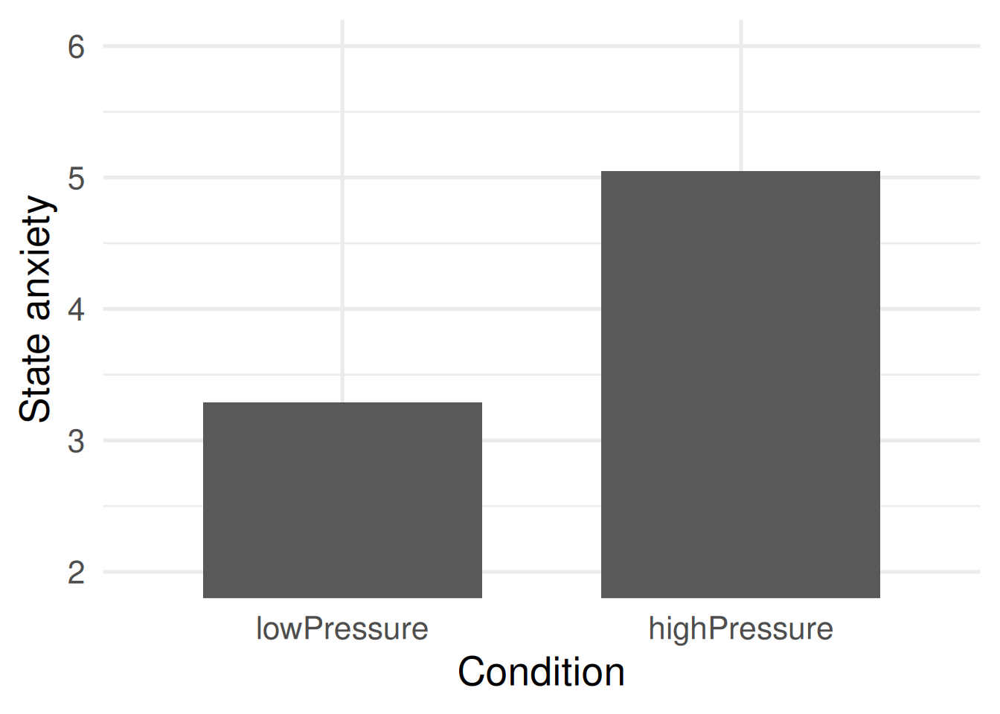
State anxiety was larger in the experimental condition.
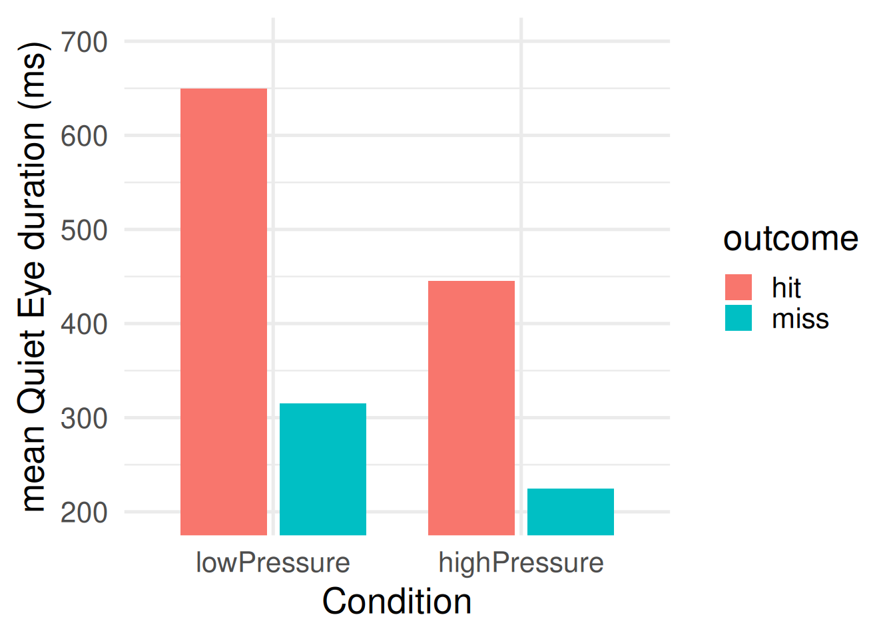
Effect of outcome: Shorter Quiet Eye duration for missed throws.
Effect of pressure: Shorter Quiet Eye duration under greater pressure.
Some evidence that attentional control is impaired under elevated state anxiety
What it shows for ACT: direct evidence that anxiety impairs attentional control in a sport task, measured rather than inferred.
Wilson, M. R., Vine, S. J., & Wood, G. (2009). The influence of anxiety on visual attentional control in basketball free throw shooting. Journal of Sport and Exercise Psychology, 31(2), 152-168. https://doi.org/10.1123/jsep.31.2.152 Accessible from Talis
Interventions
Attentional control can be addressed in two ways: by training gaze behaviour (as proxy for attentional control), or by training working memory capacity.
For each: what it involves, the ACT-specific mechanism it addresses, and the supporting evidence.
The evidence is not equally strong for both. One is well supported (Quiet Eye); the other is promising but less tested (working memory training).
Gaze training / Quiet Eye training
Definition: training to produce a longer and steadier quiet eye, specifically under elevated cognitive anxiety.
ACT-specific mechanism addressed (hypothesis 3):
- Quiet eye duration indexes the dominance of goal-directed orienting (concentration) over stimulus-driven orienting (distraction)
- Training a longer quiet eye trains the dominance of goal-directed orienting
Delivery. The intervention consists of instructions: a fixed pre-performance gaze routine, delivered verbally, rehearsed in practice and then under induced pressure. Eye tracking is required to measure the quiet eye and to sanity-check the intervention, but not to deliver the training.
Caveats to consider for the success of training:
- most experts already show long quiet eye durations, at least under low pressure
- in many sports it is not straightforward to identify where the visual focus should be, or for how long
Quiet eye training maintains putting performance under pressure (Vine & Wilson, 2010)
First Quiet Eye training study
Key methodology:
- N = 14 university students, minimal golf experience
- control goup: technical training
- experimental group: technical and Quiet Eye training
- Design: longitudinal (i.e., over time)
- Task: straight putts
Procedure:
Training protocol instructions
Technical instructions:
- Stand with legs hip width apart and keep your head still.
- Maintain relaxation of shoulders and arms.
- Keep the putter head square to the ball.
- Perform a pendulum-like swing and accelerate through the ball.
- Maintain a still head after contact.
Quiet Eye training instructions
- Assume stance and ensure that gaze is on the back of the ball.
- Fixate the hole. (Fixation should be made no more than three times.)
- Your final fixation should be on the back of the ball and for not longer than 2-3 seconds.
- No gaze should be directed to the club head or shaft during the putting action.
- Your fixation should remain steady for 200-300 ns after contact with the ball.
Key results:
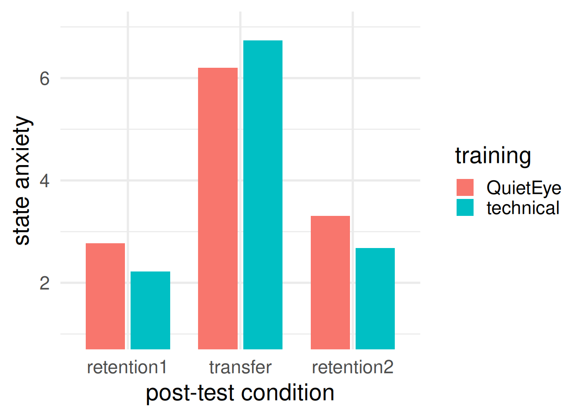
The training did not have an effect on state anxiety. The training did not alter people’s anxiety reaction to competitive pressure.
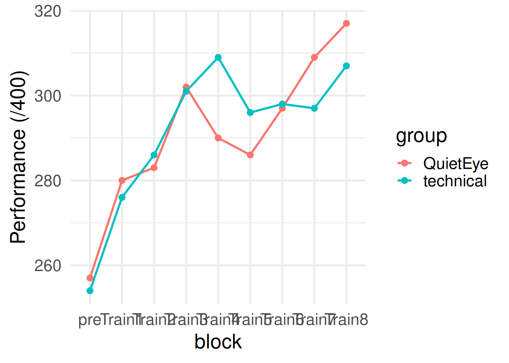
No performance differences at pre-test (before training).
Performance overall improving for both groups.
No obvious performance advantage on one group over the other.
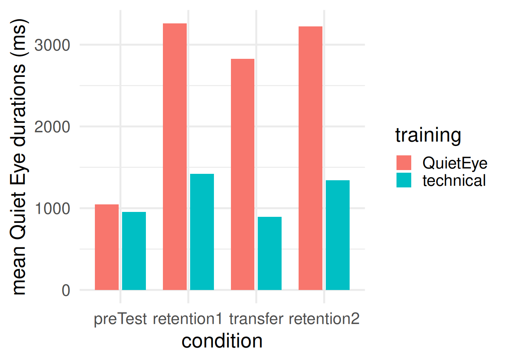
Quiet Eye durations were as expected:
- equal between groups at pre-test
- longer for the QE group, at the post-tests
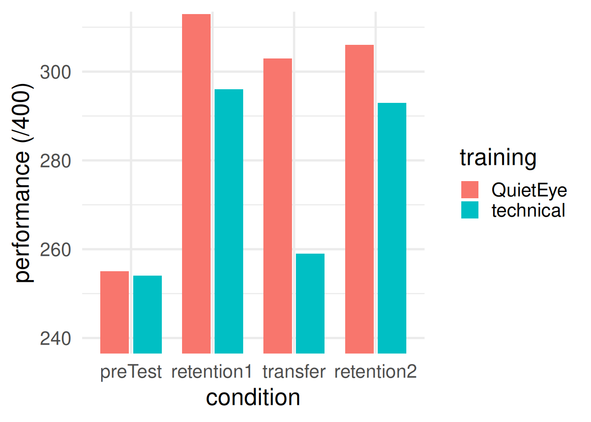
Performance was comparable across groups at all retention post-tests, except at transfer (high pressure performance), where the technical but not the Quiet Eye group showed a significant drop in performance
What it shows for ACT: gaze training altered the effect of pressure on performance without altering reported anxiety. The mechanism operated on attention rather than on emotion.
Vine, S. J., & Wilson, M. R. (2010). Quiet eye training: Effects on learning and performance under pressure. Journal of Applied Sport Psychology, 22(4), 361-376. http://dx.doi.org/10.1080/10413200.2010.495106 Accessible from Talis
Optional reading (review of Quiet Eye training literature):
Vine, S. J., Moore, L. J., & Wilson, M. R. (2014). Quiet eye training: The acquisition, refinement and resilient performance of targeting skills. European journal of sport science, 14(sup1), S235-S242. http://dx.doi.org/10.1080/17461391.2012.683815 Accessible from Talis
Cognitive training
Definition: training to increase working memory capacity.
ACT-specific mechanisms addressed (hypotheses 1 and 4-6):
- worry occupies resources that would otherwise be available for task-related processing
- a permanently larger capacity would leave sufficient resources for the task despite worry
- improved inhibition would reduce the intrusion of task-irrelevant information
Delivery. Repeated sessions of an adaptive working memory task; in the studies below, computerised dual n-back over approximately three weeks.
Caveats to consider for the success of training:
- transferability to real-world tasks is disputed
- the sport evidence comes mainly from a single research group
Adaptive dual n-back improves attentional control under anxiety (Sari et al., 2016)
Key methodology:
- N = 26 university students, pre-screened through questionnaires for high trait anxiety and low attentional control
- experimental group: adaptive cognitive trainining (adaptive dual n-back)
- control group: low-load cognitive training (non-adaptive dual 1-back)
- Design: longitudinal (i.e., over time)
Procedure:
- Some pre and post-test measures:
- attentional control through rest state electroencephalography (EEG)
- Flanker task performance (Link to Flanker task), under anxiety-inducing conditions (loud and unpredictable noise bursts)
Training explanations:
- visual n-back: one 3x3 grid is presented at the time with only once cell illuminated. Participants need to respon when the same grid was presented n trials before.
- phonological n-back: one letter is pronounced at the time. Participants need to respon when the same letter was presented n trials before. (Link to classic visual letter n-back)
- dual n-back: visual and phonological stimuli are presented simultaneously. Trials can match visually (press a key), phonologically (press another key), or both (press both keys)
- adaptive dual n-back: the number n increased or decreased at the next block depending on accuracy at the previous block. Consult the paper for a figure of the stimuli
- Schedule: 15 sessions in 21 days
Some key results
- the adaptive group reached high levels of complexity (large n in b-back)
- The adaptive group showed better Flanker task performance under conditions of elevated state anxiety
- The adaptive group showed larger values of EEG indices associated with better attentional control
- Cognitive training improved attentional control under pressure / resilience of attentional control to pressure
What it shows for ACT: working memory capacity can be trained, and the benefit appears specifically under elevated anxiety. The improvement is in goal-directed control over stimulus-driven orienting: the trained group became better at not focusing on a salient distractor and looking away from it.
Sari, B. A., Koster, E. H., Pourtois, G., & Derakshan, N. (2016). Training working memory to improve attentional control in anxiety: A proof-of-principle study using behavioral and electrophysiological measures. Biological psychology, 121, 203-212. http://dx.doi.org/10.1016/j.biopsycho.2015.09.008 Accessible from Talis
Adaptive dual n-back in a tennis task (Ducrocq et al., 2017)
Key methodology:
- Similar to that of Sari et al. (2016) but in a sport task (tennis)
- N = 30 participants from tennis club
- experimental group: adaptive dual n-back
- control group: non-adaptive dual 1-back
- Some pre- and post-test measures:
- performance at change detection task
- tennis volley task performance and Quiet Eye duration, under lower and higher pressure
Some key results
- The experimental group reached performed better than the control group at the change detection task
- The experimetal group performed better at the higher pressure, whereas no changes in the control group
- The experiemntal group showed later Quiet Eye period offset than the control group
What it shows for ACT: the sport evidence for the same claims.
Design considerations. Approximately fifteen participants per group; no pre-training pressure test; a fixed low-then-high pressure order.
Ducrocq, E., Wilson, M., Smith, T. J., & Derakshan, N. (2017). Adaptive working memory training reduces the negative impact of anxiety on competitive motor performance. Journal of Sport and Exercise Psychology, 39(6), 412-422. https://doi.org/10.1123/jsep.2017-0217 Accessible from Talis
Effectiveness and mechanism are separate questions
Evidence that quiet eye training is effective is separate from evidence about the mechanism by which it works.
The first is reasonably strong: trained performers maintain performance under pressure better than technically trained controls.
The second is debated.
An intervention can be described as effective and interpreted through Attentional Control Theory, provided the mechanism is presented as debated.
Imposed hold vs trained quiet eye
A coach instructs an athlete in a target sport (e.g., golf) to hold the sight on the target (e.g., the ball) for longer before release. The athlete concentrates on executing that instruction.
Is this quiet eye training?
No.
A consciously imposed fixation adds an explicit instruction to perform and monitor.
Training quiet eye means rehearsing a gaze routine until (ideally) it becomes automatic, requiring less conscious processing under pressure rather than more.
Summary: applying Attentional Control Theory
The components of an argument aligned with Attentional Control Theory.
The theory
Anxiety consumes working memory and transfers attention from goal-directed to stimulus-driven control; performers compensate with extra effort, so efficiency drops before performance does.
Supporting studies
- Shapiro & Johnson (1987) — arousal (anxiety) shifts which stimulus dominates
- Smith et al. (2001) or Wilson et al. (2006) — effort increases, efficiency falls
- Wilson et al. (2009) — pressure impairs attentional control / shortens quiet eye, in turn impairing performance
Observable symptoms
Task-irrelevant cues intruding under pressure; worry reported before execution; effort up with performance flat; difficulty disengaging after an error; gaze becoming erratic.
Two interventions
- Gaze training, targeting hypothesis 3
- Cognitive training, targeting hypotheses 1 and 4-6
Focus on the mechanisms
Identify the mechanism implicated, then show that the intervention acts on that mechanism.
ⓘ more info ⇩
Optional: some thoughts
Which model of performing under pressure is right?
Attentional control
Reinvestment
Challenge and threat appraisal
Psychomotor efficiency
Constrained action
Ironic processing
Etc.
No doubts these models will be refined again and again, and that’s the researcher’s job. For applied contexts, however, I encourage you to focus on the utility of a model (in explaining a phenomenon or achieving practical impact).

Learning outcomes, Session III
By the end of this session you should be able to:
- State the six hypotheses of Attentional Control Theory
- Assign empirical evidence to the hypothesis it supports
- Explain what each study measured, and what it does and does not show
- Describe how Attentional Control Theory: Sport extends the original theory
- Choose and evaluate critically between design options for a study testing a prediction of the theory
- Justify an intervention by naming the mechanism it addresses
Worksheet 3
Space to write during this session: predictions, reasoning, notes.
Open it now and keep it alongside the slides.
Use the copy or download button to save your work.
The six hypotheses
1. Processing efficiency. Anxiety impairs efficiency more than effectiveness.
2. Task demands. The impairment is greater when the task is demanding.
3. Attentional control. Anxiety shifts the balance from goal-directed to stimulus-driven orienting.
4. Inhibition. Anxiety impairs the ability to resist task-irrelevant information.
5. Shifting. Anxiety impairs the ability to move attention to what the task now requires.
6. Updating. Anxiety impairs the monitoring of information held in working memory, though less than 4 and 5.
Mapping the evidence
Ten studies from earlier content are listed on the worksheet, each with a one-line reminder of what it showed.
For each study, choose a hypothesis from the list beside it.
- 1 processing efficiency
- 2 task demands
- 3 attentional control
- 4 inhibition
- 5 shifting
- 6 updating
Then, for any three studies:
- What was actually measured?
- What does the study not show?
Several studies fit more than one hypothesis. Choose the one the finding most directly shows.
worksheet activity
Some studies measure the mechanism itself, such as gaze or effort. Others measure only performance, leaving the mechanism inferred. The first kind tests a hypothesis; the second is consistent with it.
Two studies that test nothing
Wilson & Pearcy (2009) compared holed putts with missed ones. Walters-Symons and colleagues compared experienced golfers with novices.
Neither manipulated anxiety. So neither can test a prediction about what anxiety does.
What they establish is that the quiet eye varies with success and with expertise, which is what makes it worth measuring at all. The theory needs that before its own claims can be tested with it.
worksheet activity
Three rows stay empty
Which hypotheses collected no studies?
| Hypothesis | Studies in Sessions I and II |
|---|---|
| 1 processing efficiency | Smith et al.; Wilson et al. (2006) |
| 2 task demands | none |
| 3 attentional control | Shapiro & Johnson (both studies); Wilson et al. (2009); Vine & Wilson |
| 4 inhibition | Lipp & Derakshan; Lautenbach; Sari; Ducrocq |
| 5 shifting | none |
| 6 updating | none |
2 is usually assumed rather than manipulated: studies rarely compare an easy and a hard version of the same task under anxiety.
5 is much less studied than inhibition. Eysenck and colleagues said so themselves in the original paper: the influence of anxiety on shifting is less clear and needs further investigation.
6 is predicted to be the least affected of the three functions, so there is less to find.
Attentional Control Theory: Sport
Any theory of pressure and performance has two things to explain:
- how pressure influences the individual’s level of anxiety
- how anxiety influences performance
Attentional Control Theory addresses the second. It says little about the first: it was built largely from comparisons between people high and low in trait anxiety.
Attentional Control Theory: Sport (Eysenck & Wilson, 2016) addresses both.
Eysenck, M. W., & Wilson, M. R. (2016). Sporting performance, pressure and cognition: Introducing attentional control theory: Sport. In D. Groome & M. W. Eysenck, An introduction to applied cognitive psychology (2nd ed., pp. 329-350). Routledge. https://doi.org/10.4324/9781315732954-20
What ACTS keeps from ACT
The main assumptions of Attentional Control Theory are incorporated into ACTS unchanged. Three of them carry the argument in sport:
- anxiety impairs processing efficiency more than performance effectiveness
- anxiety reduces the efficiency of inhibition
- anxiety reduces the efficiency of shifting
Those are hypotheses 1, 4 and 5. Updating is not among them, which matches what you saw in the mapping: it is the function the theory expects to be least affected.
Everything from Sessions I and II still applies. ACTS adds to the theory rather than replacing it.
What ACTS adds
Four differences from the original theory:
1. The determinants of anxiety. Pressure does not automatically produce anxiety. Whether it does depends on cognitive biases that alter the perceived probability and cost of poor performance.
2. Feedback loops. Errors and failures feed back into those appraisals, so pressure and performance influence each other rather than running one way.
3. Motivation. How much effort a performer deploys to compensate depends on motivation, not only on capacity.
4. Sporadic disruption. In trained performers, attentional disruption is intermittent rather than continuous.
The first two are the ones that matter most for practice.
Two cognitive biases turn pressure into anxiety
- Attentional bias: attending disproportionately to threat-related rather than neutral stimuli
- Interpretive bias: interpreting an ambiguous situation as threatening
Under pressure, an attentional bias might direct a performer towards threat cues: a difficult passage ahead, an error already made, an opponent performing well. An interpretive bias might lead them to read an error as a predictor of how the rest will go.
Both raise competitive anxiety. Both vary between individuals, which is why the same competition produces anxiety in one performer and not another.
You have already met the evidence for attentional bias: Lipp & Derakshan, and Lautenbach. ACTS puts that evidence to a different use.
The same error, interpreted two ways
Interpretive bias, in one example.
Walter Hagen was a professional golfer who won eleven major championships. He expected to make seven mistakes in an average round, and interpreted each one accordingly: when he made a bad shot, he did not worry about it, he counted it as one of the seven.
In a daily diary study of elite golfers, the most commonly reported stressors during important competition were physical errors (29.5%), mental errors (24%) and watching an opponent play well (13%).
Errors are the commonest stressor reported in competition. Hagen had the same errors as everyone else; what differed was what he took them to mean.
The point for the theory: the error does not raise anxiety by itself. The appraisal does. That is where ACTS locates the opening for an intervention.
Hagen example is reported in Eysenck & Wilson (2016).
Evidence for ACTS, from studies already covered
ACTS does not require new evidence. Much of what supports it is what has been covered in earlier sessions.
Attentional control predicts success
Successful performance in aiming sports depends on a relatively long quiet eye, and anxiety shortens it and impairs performance.
Wilson et al. (2009); Vine & Wilson (2010).
Experts have better attentional control
Across sport, medicine and transportation, experts fixate task-relevant information faster and spend less time on task-irrelevant areas.
A meta-analysis of expert-novice eye movements. The ACTS chapter cites it as evidence for the theory’s claim that superior attentional control underlies expert performance.
What ACTS adds is the front half of the process: why the anxiety increased in the first place, and why one error makes the next more likely.
Gegenfurtner, A., Lehtinen, E., & Säljö, R. (2011). Expertise differences in the comprehension of visualizations: A meta-analysis of eye-tracking research. Educational Psychology Review, 23(4), 523-552.
What this changes in practice
If errors feed appraisals, and appraisals produce anxiety, then the moment immediately after a mistake is an intervention point.
Both interventions already covered can be applied there: a gaze routine re-established before the next attempt, and the capacity to inhibit the memory of the error.
It also suggests something neither intervention covers: how a performer is taught to interpret an error in the first place.
worksheet activity
Task: four design decisions
The study already exists in outline: test whether anxiety impairs shifting in a sport task. Four decisions remain.
1. The task
- golf putting
- a reaction-time task on a screen
- a decision-making task in a small-sided game
2. The anxiety manipulation
- competition with a leaderboard
- an audience watching
- a financial incentive
3. The measure of shifting
- time to return to the target after a distractor appears
- accuracy on trials where the cue changes part-way through
- a self-report questionnaire afterwards
4. The comparison
- high versus low trait anxiety, between participants
- the same participants under low and high pressure
worksheet activity
Eysenck and colleagues noted in the original paper that the influence of anxiety on the shifting function is less clear than on inhibition and needs further investigation. Eysenck, M. W., Derakshan, N., Santos, R., & Calvo, M. G. (2007). Emotion, 7(2), 336-353. https://doi.org/10.1037/1528-3542.7.2.336
Optional: What each choice costs
The task. Putting is self-paced and easy to measure, but shifting barely features in it. The game task demands shifting constantly, and is the hardest to measure anything in.
The manipulation. All three raise anxiety in some people. Only one of them lets you check that it worked, which is why a manipulation check is not optional.
The measure. Self-report tells you what someone thinks they did. The first two measure behaviour, but the first could equally reflect failing to disengage from the distractor — which is inhibition, not shifting.
The comparison. Between-participants compares people who differ in many ways besides trait anxiety. Within-participants compares the same person, but the second attempt is never the first attempt.
There is no option set here without a cost. Choosing one and knowing what it costs is what designing a study consists of.
Task: justify an intervention
The symptom:
A rushed pre-performance routine, with the final fixation shortening before release.
worksheet activity
A model answer
Symptom: a rushed pre-performance routine, with the final fixation shortening before release.
This symptom suggests impaired attentional control (hypothesis 3), because the quiet eye indexes the dominance of goal-directed orienting, and a shortened final fixation indicates that stimulus-driven orienting is winning.
The intervention I would use is gaze training, which acts on that mechanism by rehearsing a fixed pre-performance gaze routine until it runs without conscious effort under pressure.
The evidence for it is Vine and Wilson (2010), where quiet-eye trained novices maintained putting performance under pressure while technically trained controls declined.
Things make this answer a good basis: the mechanism is named, the intervention is tied to that mechanism rather than to performance in general.
Optional: ocular and cortical activity during the quiet eye
Key methodology:
- Golf putting
- Electrooculography for quiet eye duration and eye quietness
- Occipital alpha power as an inverse marker of visual processing
- Kinematic sensors for swing duration
Key results:
- occipital alpha increased before and during the swing: visual processing decreased rather than increased
- it fell less with a longer quiet eye
- both ocular measures correlated strongly with swing duration
Why this is compatible with ACT. If visual processing decreases during the quiet eye, the fixation is not there to gather information. The increase in alpha may instead reflect reduced processing of task-irrelevant visual information: a sharpened focus on the ball. That is goal-directed dominance over stimulus-driven orienting, which is what the theory requires.
Gallicchio, G., & Ring, C. (2020). The quiet eye effect: A test of the visual and postural-kinematic hypotheses. Sport, Exercise, and Performance Psychology, 9(1), 143-159. http://dx.doi.org/10.1037/spy0000162
ACTS contributions
Anxiety consumes working memory and transfers attention from goal-directed to stimulus-driven control; performers compensate with extra effort, so efficiency drops before performance does.
ACTS adds where the anxiety came from, and that errors feed back into it.
The evidence is strongest for inhibition and for the quiet eye, thinner for shifting, and thinnest for training updating.
Optional: material from Rob Gray’s perception and action podcast
Performing and choking under pressure
Interview with Sam Vine, Quiet Eye, Pressure, VR training
Choking under pressure revisited: critiques
Choking under pressure revisited: integrative theories
Sports Science Shorts: Choking under pressure Q&A
Interview with Denise Hill, choking under pressure